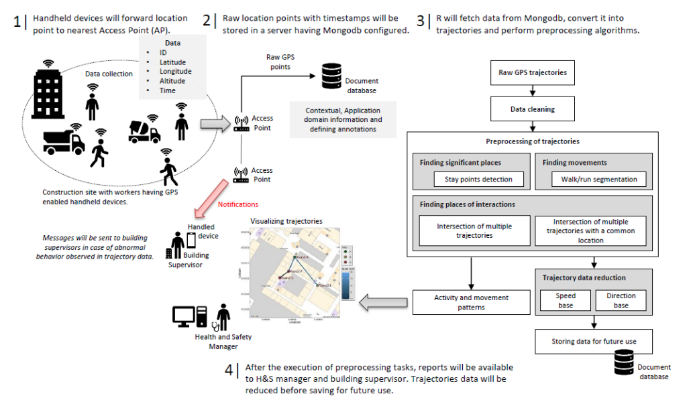

STriDE¶
Semantic Trajectories in Dynamic Environment: Addressing the Challenges of Understanding the Behaviours of Moving and Changing Objects in Dynamic Environments
Presentation¶
The technological advancements in mobile computing coupled with location-based services provide tremendous opportunities to capture different behaviours of moving and changing objects for pattern mining and activity recognition. These behaviours are extracted after processing raw spatio-temporal streams having location information with timestamps collected from indoor and outdoor positioning devices. Based on the application requirements, these raw streams are transformed into finite meaningful episodes known as trajectories. While the information from raw trajectories is useful to understand movement dynamics of objects, it does not provide the contextual semantic information which is required to understand meanings behind each trajectory episodes.
In order to address this challenge and to understand fine-grained objects` interactions with its dynamic environment, Semantic Trajectories in Dynamic Environments named STriDE model is suggested to semantically enrich raw trajectories. The ontologybased STriDE model receives tracking results of moving objects by combining raw data pre-processing and semantic definition of the environment (e.g. BIM). The STriDE model takes advantage of GeoSPARQL spatial capabilities as well as methods proposed in ontologies fluent to represent the evolution of objects in the dynamic environment. Once the semantic enrichment process is done on the raw trajectory data using the STriDE model based on semantic data sources including application domain knowledge and geographic databases, it offers many applications for monitoring and managing dynamic environments.
However, this project discusses two of them.
- Intrusions are the common type of near-miss incidents caused by unsafe worker behaviours such as taking shortcuts on sites to move around without recognizing the potential risks associated with the locations. These incidents can lead to serious accidents such as falling from heights, exposure to hazardous materials, and striking against or being struck by moving objects. In an attempt to identify intrusions, worker trajectory data is enriched using the STriDE model and stored in the triple store. The developed system will not only serve as a central data repository to store users' trajectories taken place on the construction site for movement related behaviour analysis but can also help building supervisors and H&S manager to manage access control of workers to hazardous locations and enabling them to identify intrusions. On the occurrence of an intrusion, an intruder can be recognized easily from its trajectory's identification and necessary actions can be performed proactively to avoid unsafe situations in the building.
- The second application apply probabilistic method i.e. Hidden Markov Models (HMMs) on semantic trajectories resulted from the STriDE model to categorize the trajectory data for identifying unsafe worker`s movements on construction sites. As, mobility of a moving object can easily be defined using individual steps and turning angles. Based on these two parameters, hidden states are defined for HMMs. Using the Viterbi algorithm, the trajectory data of workers is categorized into static (no change in steps or angles), normal (safe walking speed and rotations), and risky (running and big rotations) states. Visualizing such mobility patterns in real-time w

Figure 1. Preprocessing ST trajectories for safety management on construction sites
Données sur le projet¶
L’équipe de projet
- Muhammad Arslan, PhD
- Chrsitophe Cruz, LIB/uB
- Dominique Ginhac, ImVIA/uB
Financé par
Bourse ministérielle
Durée du projet
Octobre 2015 à décembre 2018
Publications¶
-
Muhammad Arslan, Christophe Cruz, D. Ginhac, Understanding Occupant Behaviors in Dynamic Environments using OBiDE Framework, Building and Environment 166, Dec. 2019, p.106412. https://doi.org/10.1016/j.buildenv.2019.106412 (Impact Factor: 4.8)
-
Muhammad Arslan, Christophe Cruz, D. Ginhac, Identifying Intrusions in Dynamic Environments using Semantic Trajectories and BIM for Worker Safety, 4th international congress on information and communication technology, February 25 - 26, 2019, London, United Kingdom. Springer Advances in Intelligent Systems and Computing book series (AISC, volume 1041). ISBN Number - 2194-5357
- SpatioMuhammad Arslan, Christophe Cruz, D. Ginhac, temporal dataset of building occupants, Data in Brief 27, Oct. 2019, pp. 1-7, p.104598. https://doi.org/10.1016/j.dib.2019.104598 (CiteScore: 0.93)
- Muhammad Arslan, Christophe Cruz, D. Ginhac, DNAS-STriDE Framework for Human Behavior Modeling in Dynamic Environments, 19th international conference on Computational Science – ICCS 2019, 2-14 June, 2019, Faro, Portugal, Lecture Notes in Computer Science, vol 11540. Springer, Cham, pp 787-793. https://doi.org/10.1007/978-3-030-22750-0_79
- Muhammad Arslan, Christophe Cruz, D. Ginhac, Visualizing Intrusions in Dynamic Building Environments for Worker Safety, Safety Science 120, Dec. 2019, pg. 428-446. https://doi.org/10.1016/j.ssci.2019.07.020 (Impact Factor: 3.6)
- Muhammad Arslan, Christophe Cruz, D. Ginhac, Semantic Trajectory Insights for Worker Safety in Dynamic Environments, Automation in Construction 106, Oct. 2019, p.102854.https://doi.org/10.1016/j.autcon.2019.102854 (Impact Factor: 4.3)
- M. Arslan, C. Cruz, D. Ginhac, Semantic Enrichment of Spatio-temporal Trajectories for Worker Safety on Construction Sites, Personal and Ubiquitous Computing, Springer, 2019 DOI: 10.1007/s00779-018-01199-5
- Muhammad Arslan, Christophe Cruz, Ana-Maria Roxin, Dominique Ginhac, Spatio-temporal Analysis of Trajectories for Safer Construction Sites, Journal of Smart and Sustainable Built Environment (SASBE), Emerald, 2018, (IF 0.63, 2016)
- M. Arslan, C. Cruz, D. Ginhac, Exploiting Semantic Trajectories using HMMs and BIM for Worker Safety in Dynamic Environments, 5th International Conference on Computational Science and Computational Intelligence in ‘Smart Cities & Smart Mobility’, IEEE, December 13-15, 2018, Las Vegas, Nevada 89119, USA.
- M. Arslan, C. Cruz, D. Ginhac, Understanding Worker Mobility within the Stay Locations using HMMs on Semantic Trajectories, 14th IEEE International Conference on Emerging Technologies, Nov 21-22, 2018, Pakistan.
- Muhammad Arslan, Christophe Cruz, Dominique Ginhac, “Understanding Occupancy Patterns of Stay Locations using Semantic Trajectory Analytics”, International Conference on Information Security and Smart Cities, pp., 27-28 June, 2018, Cambridge city, United Kingdom.
- Muhammad Arslan, Christophe Cruz, Dominique Ginhac, “Semantic Enrichment of Spatio-temporal Trajectories for Worker Safety on Construction Sites”, The 9th International Conference on Ambient Systems, Networks and Technologies, pp., May 8-11, 2018, Porto, Portugal.
- M. Arslan, C. Cruz, A. Roxin, D. Ginhac, Using Spatio-temporal Trajectories to Monitor Construction Sites for Safety Management, ICIME 2017, October 9–11, 2017, ACM, pp. 211-216, https://doi.org/10.1145/3149572.3149600.
- Arslan, A. Roxin, C. Cruz, D. Ginhac, Big data applications for disaster management, BigCVEn-13th International Conference on Signal image processing technology and internet based systems, IEEE, December 4-7, 2017, pp.1-6.